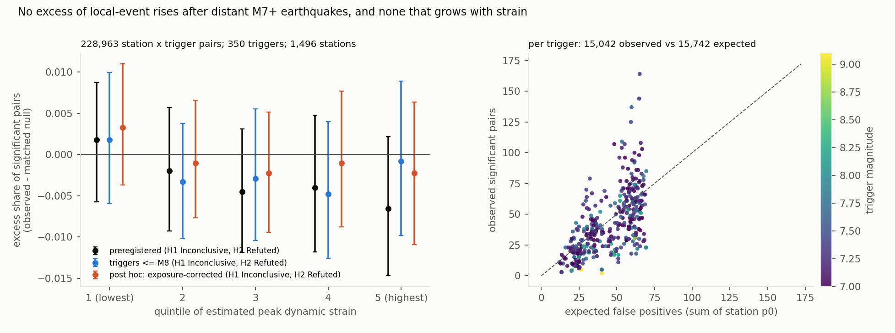
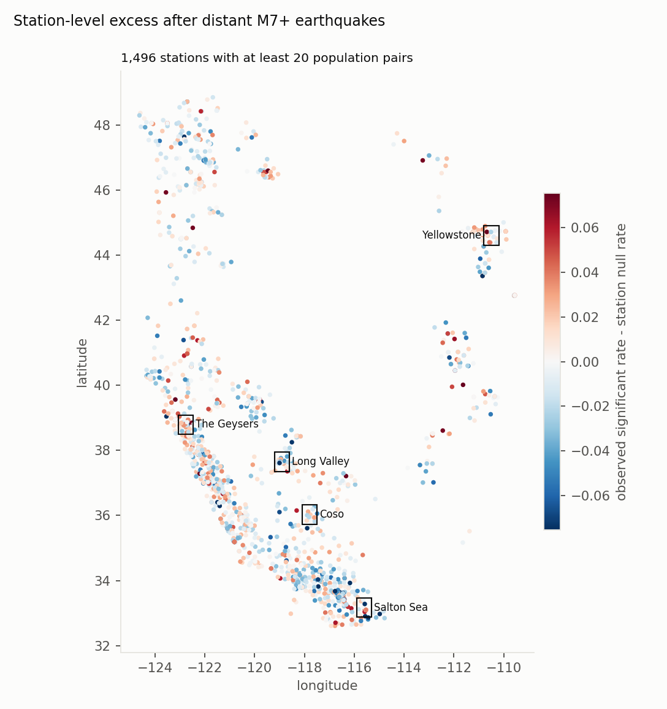

Verdict: H1 Inconclusive; H2 Inconclusive on comparable arms (corrected primary, post hoc); H2 Refuted as preregistered. The preregistered null was drawn only at times away from other large earthquakes, while the real triggers were not. Comparing like with like, there is no excess, but the interval reaches the half-point bar.
- Why the preregistered comparison is not like for like (found in review).
- Pseudo-triggers were rejected within 10 days of any global M ≥ 7 and 3 days of any M ≥ 6.5. Real triggers were not: 282 of the 350 fail that rule.
- Pairs with another M ≥ 6.5 between the origin and the end of the post window carry that earthquake's surface-wave detection shadow and aftershock masking, which the null never sees. Their mean excess is −0.013 (−0.019 to −0.006).
- This contamination grows with strain, from 16% of pairs in the lowest strain quintile to 33–36% in the top two, because big triggers have big early aftershocks.
- H2 (remote triggering produces an excess of significant local-event rises): Inconclusive on comparable arms.
- Corrected primary: the null's own exclusion rule applied to real triggers leaves 68 triggers and 43,771 station × trigger pairs. The mean excess is +0.000 (95% two-way bootstrap −0.008 to +0.008).
- No other M ≥ 6.5 inside a pair's own windows (109 triggers, 72,189 pairs): +0.004 (−0.002 to +0.011), Inconclusive.
- Preregistered, all 350 triggers (228,963 pairs, 1,496 stations): 15,042 significant rises against 15,742 expected; mean excess −0.003 (−0.007 to +0.001), Refuted by the preregistered rule. Every preregistered robustness variant gives the same verdict, but all share the same mismatch.
- H1 (the excess is at least 3 times larger in the top strain quintile, and absent in the bottom): Inconclusive in
every analysis.
- Corrected primary: top quintile −0.003 (−0.024 to +0.023), bottom +0.002 (−0.015 to +0.020).
- Preregistered: top −0.007 (−0.015 to +0.002), bottom +0.002 (−0.006 to +0.009).
- Nothing rises with strain in either. The intervals are too wide to exclude a 3-times contrast.
- What the design can detect. The proxy catches about half of the M ≥ 1 events near a station (46%; 52% at
M ≥ 3), and a significant rise needs roughly a doubling of a station's weekly rate within a day. So the test is
for triggered swarms that double a station's rate for a day, not for a few extra tiny events.
- During the surface waves themselves (exploratory), detections fall, by 1.4 percentage points in significant rises. Instantaneous triggering, where most published cases sit, cannot be tested here.
- The stations are about 1,500 long-running ones, 16% of the 9,336 with proxy data, chosen because every station-day in a pair's 9-day window had to be available. The rule is the same for real and random times. Each station's null rests on a median of 212 valid random times, so single-station excesses are mostly noise.
- Per trigger, apparent triggering is common and uninformative.
- Per trigger, the spread of observed minus expected is 10 times the variance that independent station outcomes would give.
- 39 of 350 triggers sit more than 3 standard errors above expectation, and 55 more than 3 below.
- A single trigger's excess cannot be read as triggering without a null that shares its timing across stations.
In plain terms
When a very large earthquake strikes anywhere on Earth, its surface waves travel around the planet. Some studies have claimed that these waves set off small earthquakes thousands of kilometres away, in places like California. Others have argued that most such "triggering" is coincidence: small earthquakes happen all the time, so some will always follow a big distant one by chance.
We used AI-detected earthquake arrivals at about 1,500 western-US seismometers with long, continuous records (of about 9,000 in the catalogue) over 24 years. For each of 350 distant earthquakes of magnitude 7 or more, we checked whether small local earthquakes picked up at each station in the following day. Then we checked how often the same station shows such a pick-up at random times.
The answer is: about as often, though not a firm "no". Our first comparison suggested slightly less often, but the random moments had been chosen away from other big earthquakes, and the real ones had not. Big earthquakes come with big aftershocks, whose waves hide small local events. Compared fairly, small local earthquakes followed the distant giants about as often as random moments, within an uncertainty of under a percentage point either way. The rate also did not rise with the strength of the passing waves, as real triggering should.
Some single big earthquakes do look as if they set things off (39 of 350), but even more look as if they did the opposite (55), and on average they match chance. Triggering may still occur in particular places, during the waves themselves, or for very small events this method misses. A widespread effect across the western US large enough for this method to detect is not seen, though a small one at the size of our preregistered bar cannot be ruled out.
What was asked
The lead (seismology-geophysics-dynamic-triggering-strain-test) asked whether remote dynamic triggering in the
western US is real and strain-dependent, under an explicit false-positive control.
- DeSalvio & Fan (2023) reported apparent triggering in southern California after up to 70% of 1,388 global M ≥ 6
earthquakes.
- Hardebeck et al. (2025) showed that false positives from the many windows tested could explain nearly all of it,
except El Mayor-Cucapah, and recommended estimating the false-positive rate explicitly.
- Guo, Brodsky & Miyazawa (2025) mapped triggering intensity from PhaseNet picks at 239 southern California stations,
without a null.
- Real triggering should scale with dynamic strain (van der Elst & Brodsky 2010).
This study runs that test region-wide with an empirical null for every station.
How it was done
- Picks. The QuakeScope 2026 western catalogue on
s3://quakescope-picks-2026(Ni et al. 2025), with the listing frozen (580,407 files, 55.3 GB).- 2,088,914,320 picks were read. 531,327,099 remain at confidence ≥ 0.5 in 2002–2025, after removing exact duplicates from repeated processing runs (3.4%).
- Same-phase picks within 0.5 s at a station (several channels) are merged.
- Picks within ±60 s of a predicted teleseismic P arrival (any ComCat M ≥ 4.5 more than 1,000 km away; iasp91) are removed: 3%.
- Local-event proxy. P–S pairs at a station (S−P 0.8–8 s; 95.6 million), with an origin time estimated as
tP − 1.37(tS − tP).
- A pair counts as local if at least 2 other stations within 50 km have a pair within ±2.5 s: 49.9 million local-event pairs.
- Validation: on 100 quiet days, the nearest analysable station caught 46% of ComCat M ≥ 1 events within 30 km, nearly flat with magnitude.
- The proxy is strict by design. Very near events (S−P under 0.8 s) and events in sparse networks are missed.
- Triggers. The 351 ComCat M ≥ 7 earthquakes of 2002–2025 at least 1,000 km from every analysed (US) station; 350 contribute pairs.
- Test. The station's local-event pairs in the 24 h starting 2 h after the slowest surface waves (2.5 km/s),
against the 7 days before the earthquake. Significant if β ≥ 2.
- A pair enters the population only if every station-day is marked loaded, the station has 2 or more neighbours, and it had at least one local-event pair in the prior 30 days.
- Pairs with a local M ≥ 3.5 within 100 km in the baseline are excluded.
- Null. 500 pseudo-trigger times per station, copied from real trigger times shifted by whole days (hour matched,
season within 45 days), away from other large earthquakes, and put through the same rules.
- p0 is the station's significant rate among valid pseudo-triggers. Stations need 100 valid ones: 1,496 of 9,336 qualify.
- The availability rule is the main filter. It applies identically to real and pseudo triggers.
- Strain. Peak dynamic strain is estimated from magnitude and distance with the surface-wave magnitude relation
(Lay & Wallace). Only its ranks matter.
- Check: at 40 broadband stations, measured 15–60 s peak velocity correlates with the estimate at Spearman 0.47 (2,546 station × trigger pairs measured), and 71% fall within one quintile.
- Statistic. Excess = I(significant) − p0, averaged by strain quintile, with a two-way bootstrap over triggers and stations (2,000).
- Coverage (G2) and plausibility (G3):
results/tables/coverage.jsonandresults/plausibility.md. Three station × trigger pairs were recomputed from raw picks, and all match exactly.
Results (results/figures/F1_excess_by_strain.png, results/figures/F2_station_map.png)


F1 shows the preregistered analysis (all 350 triggers). Its slight negative tilt at high strain comes from the aftershock contamination described in the verdict; on comparable arms the quintile excesses are flat around zero.
| analysis | pairs | E1 (lowest strain) | E5 (highest strain) | all | H1 / H2 |
|---|---|---|---|---|---|
| corrected primary: null's exclusion rule applied to real triggers (post hoc) | 43,771 | +0.002 (−0.015 to +0.020) | −0.003 (−0.024 to +0.023) | +0.000 (−0.008 to +0.008) | Inconclusive / Inconclusive |
| post hoc: no other M ≥ 6.5 in the pair's windows | 72,189 | +0.004 (−0.009 to +0.020) | +0.005 (−0.010 to +0.022) | +0.004 (−0.002 to +0.011) | Inconclusive / Inconclusive |
| post hoc: another M ≥ 6.5 in the post window | 65,887 | −0.016 (−0.027 to −0.004) | −0.013 (−0.030 to +0.006) | −0.013 (−0.019 to −0.006) | Inconclusive / Refuted |
| post hoc: another M ≥ 6.5 in the baseline only | 90,887 | +0.010 (−0.000 to +0.020) | −0.005 (−0.016 to +0.007) | −0.001 (−0.007 to +0.004) | Refuted / Refuted |
| preregistered | 228,963 | +0.002 (−0.006 to +0.009) | −0.007 (−0.015 to +0.002) | −0.003 (−0.007 to +0.001) | Inconclusive / Refuted |
| triggers ≤ M 8 | 214,988 | +0.002 (−0.006 to +0.010) | −0.001 (−0.010 to +0.009) | −0.002 (−0.006 to +0.002) | Inconclusive / Refuted |
| geothermal and volcanic areas excluded | 204,807 | +0.000 (−0.007 to +0.008) | −0.007 (−0.016 to +0.002) | −0.004 (−0.007 to −0.000) | Inconclusive / Refuted |
| 24-hour baseline | 259,911 | +0.002 (−0.003 to +0.008) | −0.004 (−0.009 to +0.003) | −0.001 (−0.004 to +0.001) | Inconclusive / Refuted |
| post window from +6 h | 228,587 | +0.003 (−0.005 to +0.011) | −0.006 (−0.014 to +0.002) | −0.003 (−0.007 to +0.000) | Inconclusive / Refuted |
| S−P 0.8–5 s | 190,681 | +0.002 (−0.005 to +0.010) | −0.006 (−0.015 to +0.004) | −0.003 (−0.006 to +0.001) | Inconclusive / Refuted |
| confidence ≥ 0.7 | 165,171 | +0.002 (−0.006 to +0.010) | −0.007 (−0.017 to +0.004) | −0.004 (−0.008 to −0.000) | Inconclusive / Refuted |
| post hoc: exposure-corrected | 228,963 | +0.003 (−0.004 to +0.011) | −0.002 (−0.011 to +0.006) | −0.001 (−0.004 to +0.003) | Inconclusive / Refuted |
| post hoc: exposure-corrected, from +6 h | 228,587 | +0.005 (−0.004 to +0.013) | −0.003 (−0.011 to +0.006) | −0.001 (−0.005 to +0.002) | Inconclusive / Refuted |
| exploratory: during the surface waves | 230,199 | −0.008 (−0.012 to −0.003) | −0.017 (−0.021 to −0.012) | −0.014 (−0.016 to −0.012) | (detection shadow) |
- By quintile (preregistered): the observed significant share is 7.1%, 6.6%, 6.4%, 6.4% and 6.3%, against station null rates of 6.8–7.0% in every quintile.
- Per trigger (F1, right;
results/tables/trigger_dispersion.json): observed significant pairs scatter widely around the expected number (dispersion ratio 10).- The largest excess is 164 observed against 65 expected (an M 7.3).
- The M 9-class earthquakes sit far below expectation, consistent with the masking and detection shadow.
- Stations (F2): no spatial concentration, including in the geothermal and volcanic areas. Each station's excess rests on a few hundred random times (standard error about 0.017 against a null rate near 0.07), so the map shows noise more than signal and should not be read station by station.


What this does and does not show
- No widespread day-scale remote triggering by distant M7+ earthquakes is detected at these stations. On comparable arms, significant local-event rises follow distant M7+ earthquakes at about the rate they follow matched random times. An excess up to the half-point bar is not excluded. This is consistent with Hardebeck et al.'s conclusion, now with an empirical, station-level null over 24 years.
- A null must share the data's exposure to other earthquakes. The preregistered null excluded times near other large earthquakes, and the real triggers were not filtered the same way. The resulting negative excess comes entirely from contaminated windows, and the contamination rises with strain. Any triggering study with a random-time null needs the same exclusion on both arms.
- No strain dependence is visible. The excess is near zero in every quintile on comparable arms. The slightly negative values at high strain in the preregistered analysis come from aftershock contamination and masking. A strain-scaled effect a few times larger than a tiny bottom-quintile effect cannot be formally excluded, because both are measured with about ±0.008 uncertainty.
- Single-trigger claims need a shared-time null. Outcomes at different stations after the same trigger are correlated, so per-trigger counts vary far more than independent tests would. Our station-level null calibrates the average, not one trigger's spread.
- Not shown:
- Rare or local triggering. The proxy catches about half of the M ≥ 1 events near a station. Triggered sequences that are very small, very close to a single station, or in sparse networks could be missed.
- Instantaneous triggering during the waves. Detections are suppressed during the wave train, so this design cannot test it.
- Triggering by nearer large earthquakes, such as El Mayor-Cucapah or Ridgecrest, excluded by the 1,000 km rule.
- Physical strain. The estimate has no site amplification. Measured velocities agree only moderately (Spearman 0.47).
Process and deviations
- Preregistration:
plan.md(e0e884d), committed before any pick was counted. The extractor, proxy, window, null and analysis code were committed before any count. - Deviations (
deviations.md):- technical notes: the listing parser, 7 partition-edge picks, and the proxy-validation diagnostic;
- D1, post-result: the exposure-corrected windows, a labelled post hoc check of a masking artefact;
- D2, after the independent review (post hoc): comparable arms (
code/comparable.py), the corrected primary and its sensitivities, the scope of the title and the station-map caveat.
- Quality gates: G1 (plan.md section 7), G2, G3, G5 (
review/overclaim_check.md) and G6 (results/attribution_ledger.csv). G4 and G7 do not apply. - Independent review: fix first (one major finding: the null excluded times near other large earthquakes, the real triggers did not); the fixes are in D2.
Reproducing it
code/fetch.py listing,metaandpicks: about 3 hours, 580,407 files.code/catalogs.py fetchandvalidation.code/proxy.py table, thencode/proxy.py run 10, andcode/proxy.py run 10 sp5andconf07: about 1 hour each.code/windows.py primary 12, then the variants base24h, post6h, sp5, conf07, exposure, exposure_post6h and instant.code/analyse.py primary, then the same variant names.code/validate.py,code/strain_check.py,code/handtrace.pyandcode/figures.py.